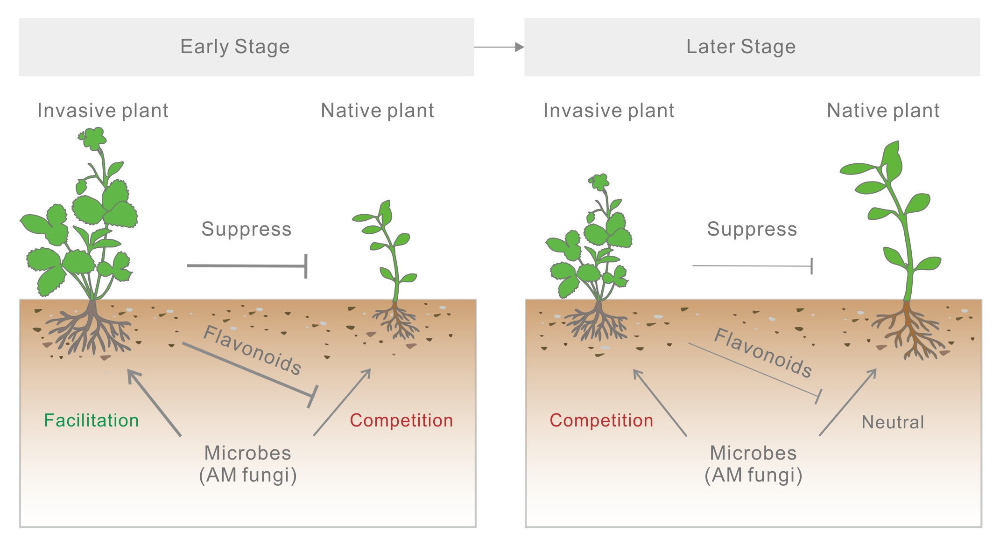

Selected Publications
- Chen XW, Zhang MM, Li H (2025) Soil Health Restoration: A Focus on Soil Microbiome Engineering. In: Ecological and Human Health Impacts of Contaminated Food and Environments. CRC Press/Taylor & Francis. link
- Li M, Chen XW, Leung AK (2024) Grass species and mycorrhizal fungi improved aggregate stability of compacted and vegetated soils. Plant Soil. link
- Chen XW, Pan M, Lee SH (2024) Microbe-assisted Plant Invasion. In: Sustainable Management of Invasive Species. World Scientific Publishing Company. link
- Sakolpanya T, Kamchoom V, Chen XW, Leung AK (2024) Effects of AM fungi on root biomechanical properties. In: Geotechnical Engineering Challenges to Meet Current and Emerging Needs of Society. CRC Press. link
- Li HH, Chen XW, Zhai FH, Li YT, Zhao HM, Mo CH, Luo Y, Xing B, Li H (2024) Arbuscular mycorrhizal fungus alleviates charged nanoplastic stress in host plants via enhanced defense-related gene expressions and hyphal capture. Environ Sci Technol 58:6258–6273. link
- Chen XW, Kamchoom V, Wu J, Sun G, Zhang Q, Li H, Wong MH, Li H, Wang J (2024) Potentials of mycorrhizal fungi in altering eight biomechanical properties of plant roots. Land Degrad Dev 35:835–848. link
Associated Fortran codes that automatically capture multiple tensile properties of roots or other similar materials such as thread: tensile - Li H, Rao Z, Sun G, Wang M, Yang Y, Zhang J, Li H, Pan M, Wang J-J, Chen XW (2024) Root chemistry and microbe interactions contribute to metal(loid) tolerance of an aromatic plant – Vetiver grass. J Hazard Mater 461:132648. link
2025
2024
